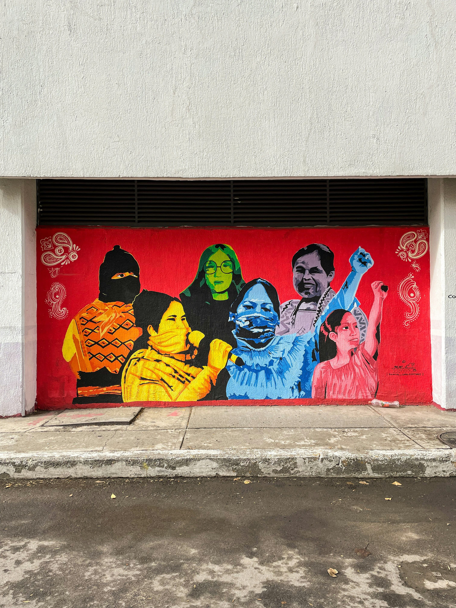
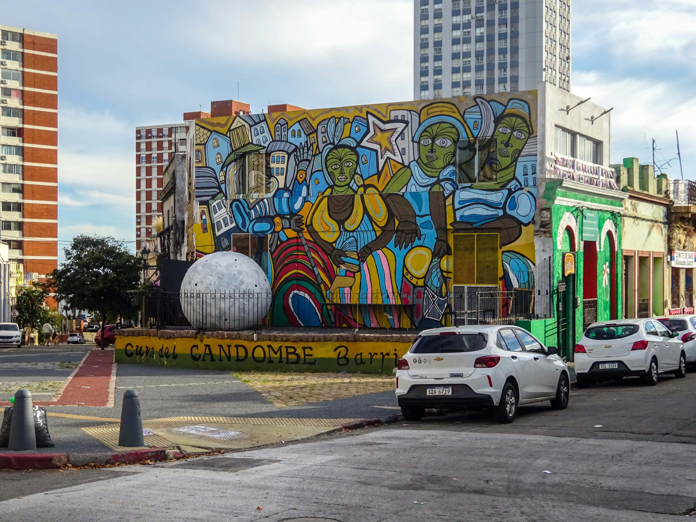
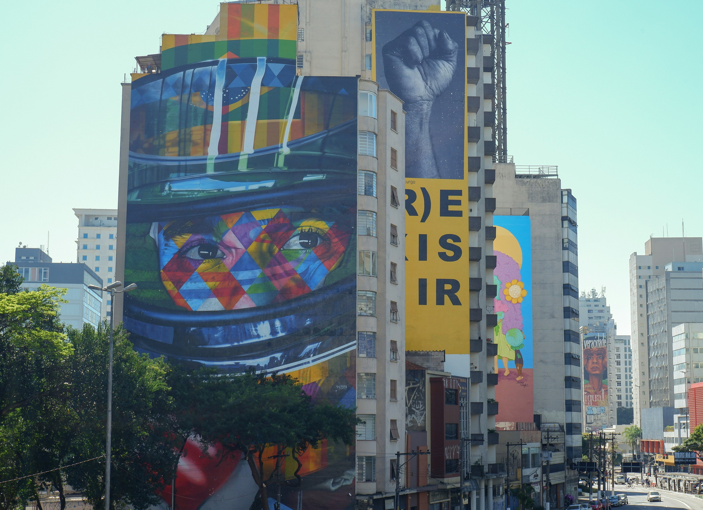
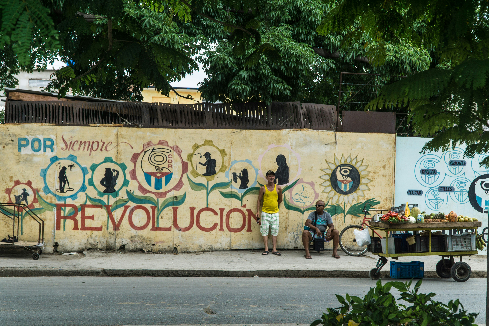

En América Latina, las paredes hablan porque el asfalto guarda la memoria de un continente marcado por profundas desigualdades, crisis y búsquedas de justicia social. En este escenario, los colectivos juveniles de artivistas itinerantes han encontrado en el muralismo comunitario una forma de tejer redes que cruzan fronteras. Viajar con un propósito artístico implica entender la producción cultural como un puente de empatía para escuchar a las comunidades locales y ayudarlas a plasmar sus propias realidades y esperanzas en los muros.
A diferencia del arte urbano individual o comercial, las intervenciones comunitarias actuales se basan en el trabajo en territorio. Los colectivos no imponen un diseño predeterminado; se instalan en los barrios, comparten asambleas con los vecinos y organizan talleres donde los niños y adultos mayores definen qué rostros, símbolos o paisajes representan su verdadera identidad. De esta manera, el proceso de pintar la pared se convierte en un ritual de sanación social que fortalece los lazos vecinales.



La comunicación interactiva juega un rol fundamental en el artivismo latinoamericano actual. Cada intervención callejera se complementa con un fuerte registro fotográfico, documental y comunitario que luego se difunde en plataformas digitales y redes sociales. Esta sinergia entre el pincel y la cámara permite que el impacto de un mural pintado en un barrio vulnerable no se quede encerrado en esa calle, sino que viaje por el mundo, visibilizando las historias de resistencia local ante una audiencia global.
Esta herencia se respira en la cotidianidad de los barrios, donde los colectivos artísticos itinerantes viajan con el propósito de tejer redes comunitarias. El diseño participativo no se impone, sino que nace de habitar el territorio: compartir la vereda con los vecinos, escuchar sus realidades y transformar las vivencias locales en un lienzo colectivo. Las paletas elegidas para estas intervenciones suelen rescatar los tonos orgánicos y terrosos de nuestra geografía —predominando los marrones profundos, los verdes nativos y los matices rosados o arcillosos— que actúan como un cable a tierra y un conector directo con las raíces de la región.

Finalmente, el impacto de estas obras en el asfalto latinoamericano se potencia al cruzar sus fronteras físicas a través del entorno digital. Las plataformas interactivas y las redes sociales operan hoy como la gran imprenta global para la autogestión cultural, permitiendo que las historias de resistencia y la identidad de una pequeña comunidad viajen por el mundo. El motor del artivismo sigue intacto: usar la comunicación visual para despertar conciencias colectivas.